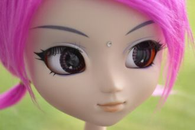
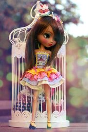
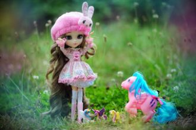

Вступление:- Почему всё цифры, цифры,Говорим о них, поём? -Просто этот островТочно с математикой знаком. Что ж, давайте поиграем!
Проза:Вместо синуса я пишу сразу минус ноль целых восемь десятых, в квадрате, да? Потому что у меня синус квадрат альфа.
В результате что я получу.
Эпсилон альфа бета гамма,Дельта альфа альфа штрих.Дельта альфа бета штрих,Дельта альфа гамма штрих.
Первое января, и снег идёт,
И снежинки падают на тонкий лёд.
Выйдем мы на улицу все гулять,
Снежных баб лепить и в снежки играть.
Припев:Колёсики, колёсики и красивый руль!По чёрному асфальтику мчит красный мой Жигуль.Проедет мимо Москвича и фарой подмигнёт.
Убежало молоко.Убежало далеко!Из ведраОпорожнилось,Вдоль по улицеПустилось,Через площадьПотекло,Постового
Я на сцену выхожу,В зал от страха не гляжу.Вам легко смотреть из зала,Как на сцене я дрожу.Ручка ходит не туда,Ножка ходит не туда,
Раз, два, три, четыре, пять.
Кит решает погулять.
Шесть, семь, восемь и двенадцать.
Море будет волноваться.
Двадцать, десять, пять, один.
О России сложено много стихов.
Позвони, буду ждать.Дальше слово за тобой.Позови, и опятьУтечём простой водой.Ветер нас унесётДалеко на облака.А внизу — самолёт,
Шум от стула при движении крайне раздражающий, неприятный. Если вы хотите двигать стул без лишнего шума, воспользуйтесь следующим советом.

Вслед за статьёй Эскандеры на тему "Зачем люди пишут стихи" предлагаю ещё несколько мыслей, которые можно использовать в сочинении.

Представить наше представлениеДля вас готовы мы сейчас.И представление без сомненияУсладой станет ваших глаз.
Золотые листикиС дерева летят.Кружит ветер листики.Это — листопад.
Это, это, это — листопад,Это, это, это — листопад.
Ом Таре Туттаре Туре СохаОм Таре Туттаре Туре СохаОм Таре Туттаре Туре СохаОм Таре Туттаре Туре СохаОм Таре Туттаре Туре Соха...
Всё не то, всё не так:
Ты -- мой друг, я -- твой враг,
Как же так всё у нас с тобою?
Был апрель, и в любви мы клялись, но, увы,
Я не только в выходныеВоскресенье и субботу -В дни недели проходныеОтдыхаю без работы.

(Оуу-е!А я пумба! Хая я пумба!)
В день, когда появилась ты,Зажглись на небе огни,Запахли весною цветы-и-иы!(Ха-аа..)